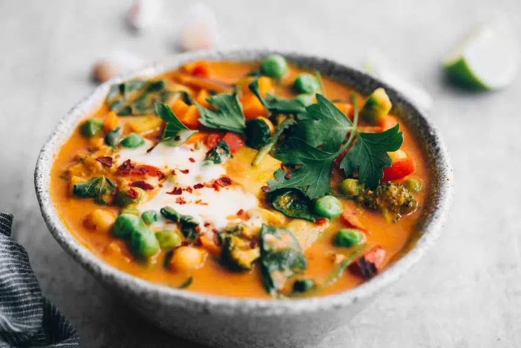
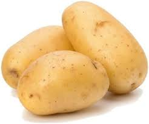

One Pot Potato Curry



POTATO 3-4 CHICKPEAS 1 BOWL
CHICKPEAS 1 BOWL
 BROCOLLI 4-5 CLOVES
BROCOLLI 4-5 CLOVES
 RED BELL PEPPERS 3-4
RED BELL PEPPERS 3-4
 FRENCH SPINACH
FRENCH SPINACH
 ONION 2-3
ONION 2-3
 Ginger 2 spoons
Ginger 2 spoons  TOMATO 2-DICED
TOMATO 2-DICED
 COCONUT MILK 250ml
COCONUT MILK 250ml
 CUMIN 1 TABLESPOON
CUMIN 1 TABLESPOON
 CORIANDER POWDER 1 TABLESPOON
CORIANDER POWDER 1 TABLESPOON
 GARAM MASALA 1 TABLESPOON
GARAM MASALA 1 TABLESPOON
 SALT AS PER TASTE
SALT AS PER TASTE
Servings Per Recipe: 4
Serving Size: 1 cup
Calories: 208 Kcal
| Nutrient | Amount Per Serving | % Daily Value* |
|---|---|---|
| Calories | 620 | - |
| Total Fat | 34g | 52% |
| Saturated Fat | 27g | 135% |
| Cholesterol | 0mg | 0% |
| Sodium | 620mg | 26% |
| Total Carbohydrates | 72g | 24% |
| Dietary Fiber | 9g | 36% |
| Sugars | 8g | - |
| Protein | 10g | 20% |
| Vitamin D | 0 IU | 0% |
| Calcium | 106mg | 11% |
| Iron | 7mg | 39% |
| Potassium | 1700mg | 49% |
| Vitamin A | 1400IU | 28% |
| Vitamin C | 70.8mg | 118% |